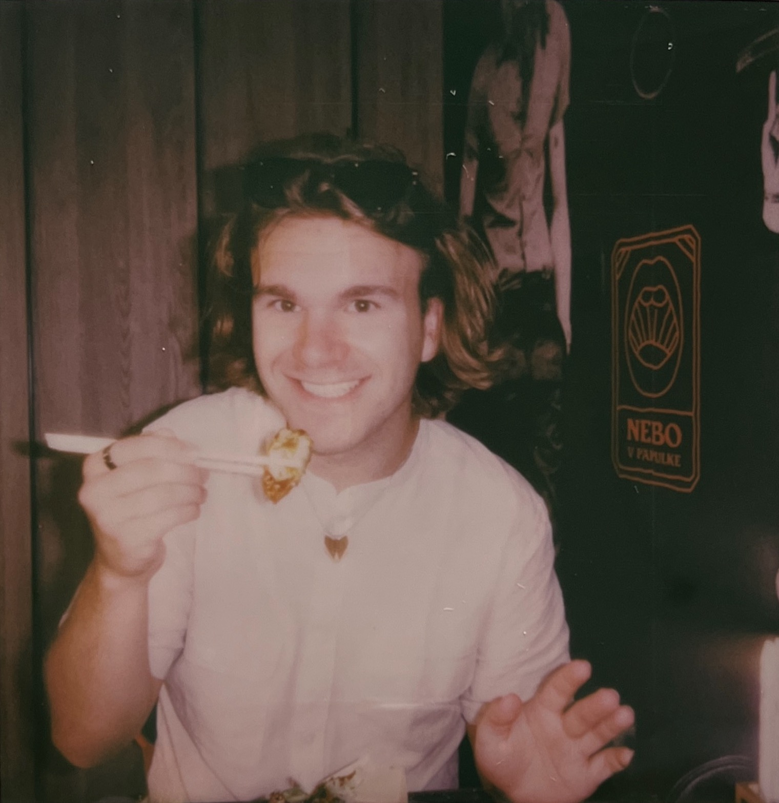

Honza Mikulica je intermediální umělec, jehož tvorba se pohybuje na pomezí tradičních
výtvarných disciplín a nových médií. Pracuje s fotografií, grafikou, objekty,
instalacemi i performancí. Ve své tvorbě propojuje intimní a osobní prožitky s reflexí
digitální éry, proměn současné společnosti a postavení člověka v prostředí utvářeném
moderními technologiemi.
Vedle vlastní umělecké praxe se dlouhodobě věnuje pedagogické činnosti a práci s
mládeží. Působí jako lektor celoročního programu letního tábora, kde se podílí na
organizaci a plánování aktivit, přípravě programů, propagaci i fotografické dokumentaci.
Zkušenosti s pedagogikou a organizací volnočasových aktivit chce dále rozvíjet a
propojovat s uměleckou praxí, mimo jiné prostřednictvím vlastního výtvarného ateliéru a
organizace mezinárodních mobilit.
Důležitou součástí jeho života je hledání rovnováhy mezi tělem, myslí a tvůrčí činností.
Aktivně se věnuje běhu a pravidelně se účastní běžeckých závodů. Zásadní místo však
zaujímá jóga, kterou vnímá nejen jako fyzickou praxi ásan, ale také jako cestu k
sebepoznání, práci s myslí a hlubšímu porozumění starověké filozofii. V roce 2026 získal
kvalifikaci instruktora jógy, čímž otevřel další prostor pro rozvoj vlastní praxe i
propojování tělesného prožitku, filozofického uvažování a uměleckého vyjádření.
2026 Instruktor powerjógy
2024 SAUCONY Vokolo priglu - 12. 10. 2024 / Brno /
14km / 1:28:24
2025 Charitativní Běh pro Julii - 13. 5. 2025 / Brno
/ 9km
2025 Olympíjský běh - 18. 6. 2025 / Brno / 10km /
0:56:42
2025 Triexpert
Cup - 13. 8. 2025 / Brno / 11,1km / 1:04:50
2025 SAFE RUN - 25 9. 2025 / Brno / 2km /
0:10:25
2025 SAUCONY Vokolo priglu - 11. 10. 2025 / Brno /
14km / 1:22:16
2026 Olympíjský běh - 17. 6. 2026 / Brno / 10km /
0:56:38
2026 SAUCONY Vokolo priglu - 10. 10. 2026 / Brno /
14km /
Honza Mikulica is an intermedia artist whose practice operates at the intersection of
traditional visual art disciplines and new media. He works with photography, graphic
design, objects, installations, and performance. His work brings together intimate and
personal experiences with reflections on the digital age, transformations in
contemporary society, and the position of the individual within an environment shaped by
modern technologies.
Alongside his artistic practice, he has long been involved in education and youth work.
He works as an instructor in a year-round summer camp programme, contributing to the
organisation and planning of activities, programme development, promotion, and
photographic documentation. He aims to further develop his experience in education and
the organisation of leisure activities and integrate it into his artistic practice,
particularly through establishing his own art studio and organising international
mobility programmes.
An important part of his life is the pursuit of balance between body, mind, and creative
practice. He is an active runner and regularly participates in running events. Yoga,
however, holds a particularly significant place in his life. He approaches it not only
as a physical practice of asanas, but also as a path towards self-discovery, mental
discipline, and a deeper understanding of ancient philosophy. In 2026, he qualified as a
yoga instructor, opening up new opportunities to develop his personal practice and
explore the connections between embodied experience, philosophical inquiry, and artistic
expression.
2026 Power Yoga Instructor
2024 SAUCONY Vokolo priglu - 12. 10. 2024 / Brno /
14km / 1:28:24
2025 Charitativní Běh pro Julii - 13. 5. 2025 / Brno
/ 9km
2025 Olympíjský běh - 18. 6. 2025 / Brno / 10km /
0:56:42
2025 Triexpert
Cup - 13. 8. 2025 / Brno / 11,1km / 1:04:50
2025 SAFE RUN - 25 9. 2025 / Brno / 2km /
0:10:25
2025 SAUCONY Vokolo priglu - 11. 10. 2025 / Brno /
14km / 11:22:16
2026 Olympíjský běh - 18. 6. 2025 / Brno / 10km /
0:56:38
2026 SAUCONY Vokolo priglu - 11. 10. 2025 / Brno /
14km /